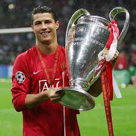

DESCRIPCION
El fútbol es un deporte de equipo que se juega entre dos conjuntos de 11 jugadores. El objetivo es meter un balón en la portería contraria. Se juega en un campo rectangular de césped. Cada equipo tiene una portería a su lado. El balón no se puede tocar con las manos ni con los brazos, excepto para los saques de banda. El equipo que marque más goles al final del partido ganaHISTORIA
La historia del fútbol europeo se remonta al siglo XIX, cuando se establecieron las primeras reglas del fútbol en Gran Bretaña. Orígenes En el siglo III a. C., en la Antigua Grecia y Roma, se jugaban deportes con balón con el pie. En el Reino Unido, se jugaban partidos violentos entre pueblos enteros, sin reglas claras y con un número ilimitado de jugadores. En 1848, dos estudiantes de la Universidad de Cambridge reunieron a otras escuelas para establecer reglas únicas. En 1863, se formó la Asociación de Fútbol (FA) en Londres, Inglaterra, y se emitieron las Reglas del Juego.LEYENDAS DEL FUTBOL
Los 10 mejores jugadores de fútbol de la historia son: Cristiano Ronaldo (Portugal). Lionel Messi (Argentina). Diego Maradona (Argentina). Pelé (Brasil). Johan Cruyff (Países Bajos). Alfredo Di Stéfano (Argentina). Franz Beckenbauer (Alemania). Zinedine Zidane (Francia)IMAGEN
VIDEO
ENLACES